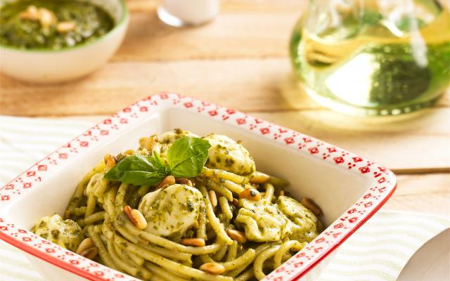

pasta pesto

ingredienten
- 400 g spaghetti
- 2 teentjes knoflook
- 1 el parmezaanse kaas
- 100 ml olijfolie
- 1 bosje basilicum
- 250 g mozarella
- 3 el pijnboompitten
- zout en peper
bereiding
- Rooster de pijnboompitten kort in een pan zonder vetstof
- Pel en plet de knoflook. Pluk de blaadjes van het basilicum.
- meng de rest samen en maal het fijn tot het een purree is
- doe de pasta en saus samen, geniet ervan